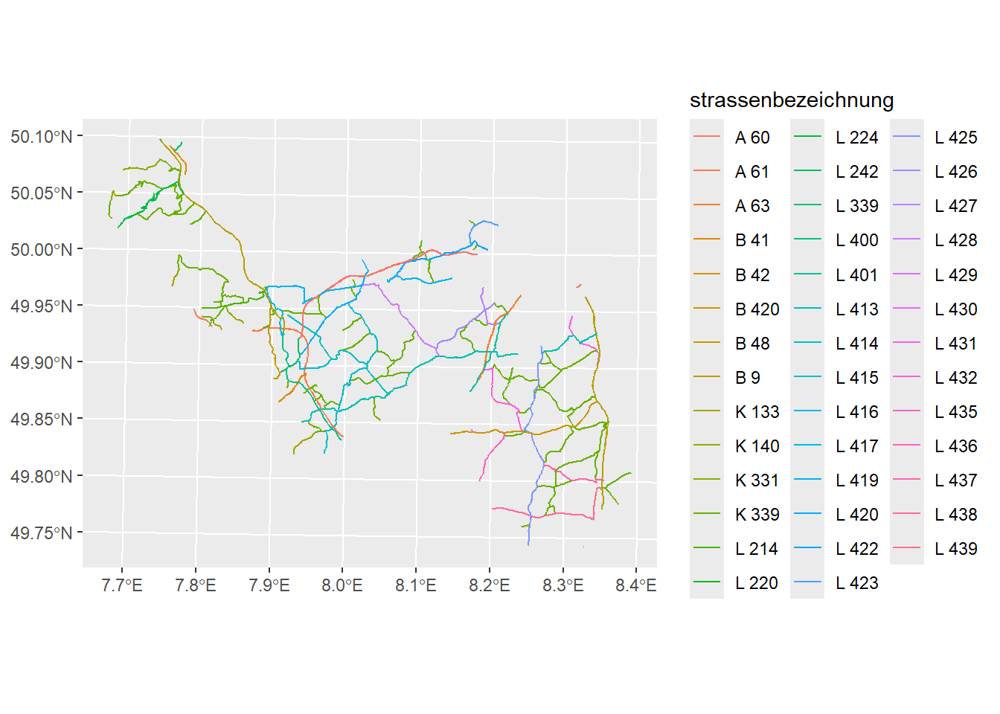
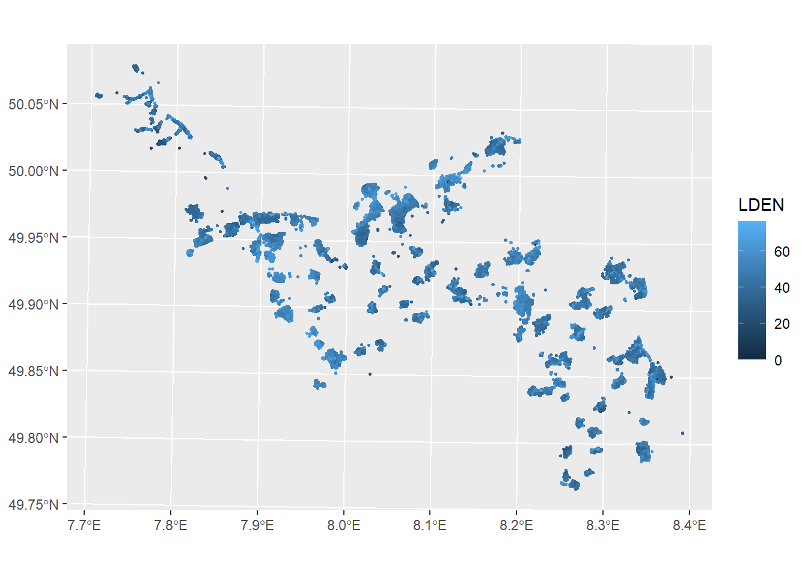
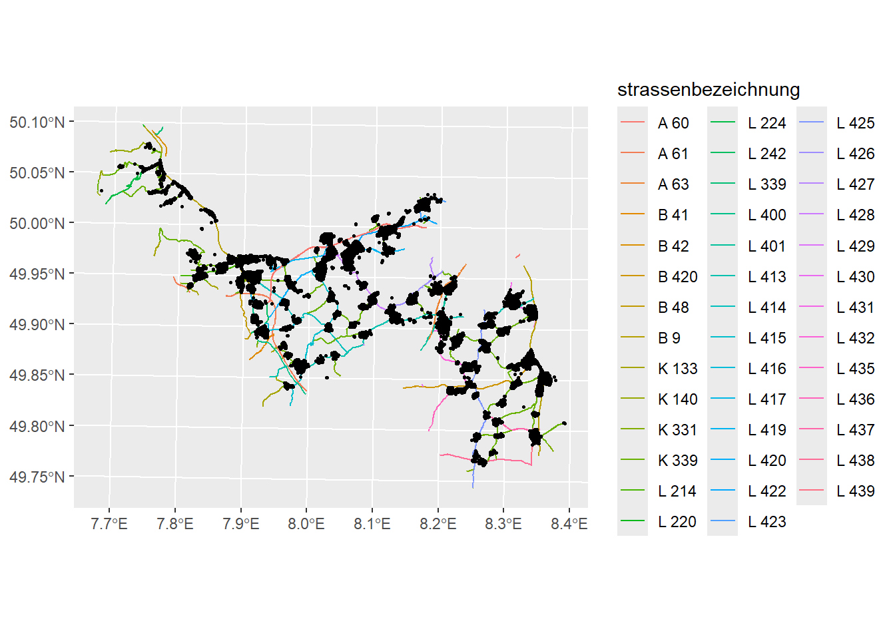
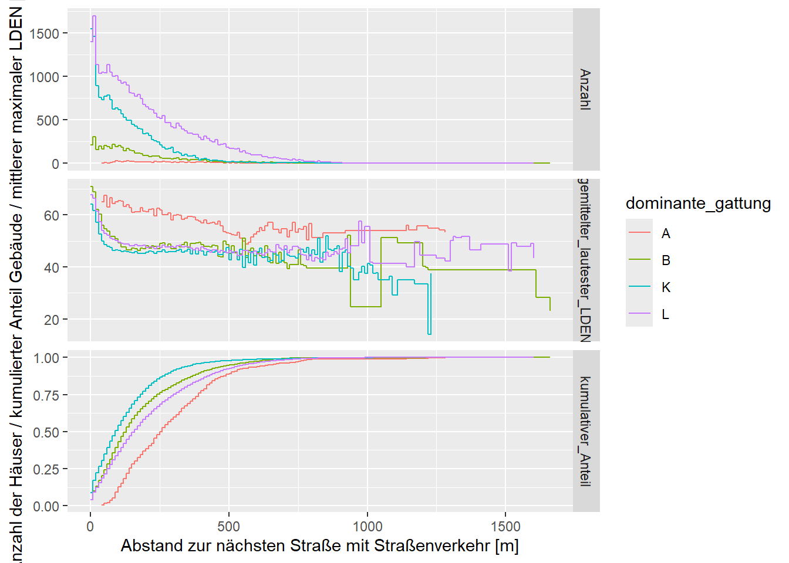
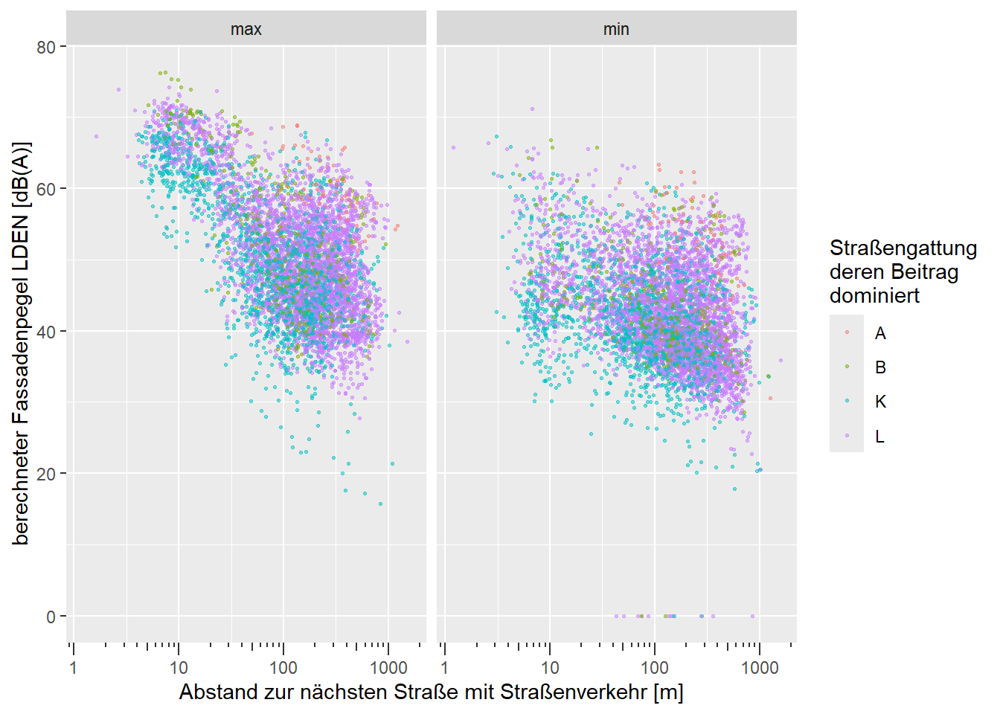
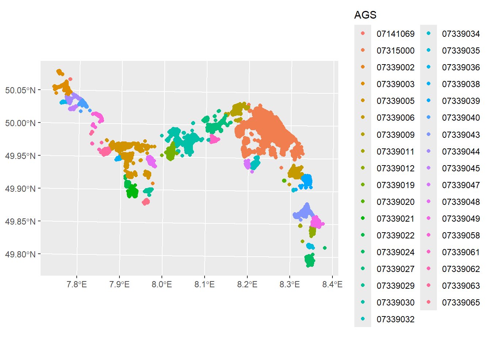

[1] "../Strassennetz_LK22.gpkg"Prozessiere Fassadenpunkte des LfU RP zur Verwendung durch die GHS
Hoffnungen und Ziele
Das LfU hat im Dezember 2025 Dateien geschickt, die für die weitere Analyse der Umgebungslärmkartierung Mainz-Bingen wichtig sind. Damals hatte ich die folgende Hoffnungen:
- Dass die Fassadenpunkte mit Straßenlärm (Datei Fassadenpunkte.shp) jetzt vollständig sind, d.h. inklusive aller Fassadenpunkte, die keinen berechneten Straßen-Lärm haben. Meine Hoffnung: damit sollte die bislang nicht zuordenbare Teilnehmeradressen geolokalsiert sein. (Ich glaube es ging um ca. 8 %)-> Das war eine Fehlannahme, diese Datei wurde nicht verändert.
- Das Straßenverkehrsmodell (“Strassennetz_LK22.gpkg”) für Mz-Bin (wichtig, um festzustellen, wie realistisch die berechneten Pegel sind; um Expositions-Misklassifikationen zu detektieren). -> Analysiere ich weiter unten. Lageinformation ist da, aber die Analyse deckt Probleme für den weiteren Verlauf aus.
- Die EBA-Fassadenpunkte für Mz-Bin und Mz: D.h. erstmals haben wir auch den vollständigen Expositions-Datensatz auch für Schienenlärm. -> Das ist einerseits korrekt, andererseit fehlen darin die Adressdaten.
Im Folgenden die etwas tiefergehende Analyse dieser Dateien.
Straßennetz Umgebungslärmkartierung Mainz-Bingen
Die Datei
wurde im Dezember 2025 gesendet von Nathalie Paris, LfU. Die Datei wird hier in R untersucht. Die Datei sollte alle mit Straßenverkehr belegten Straßen aus dem für die Umgebungslärmkartierung verwendeten Straßenverkehrsmodell beinhalten. Sie besteht aus einem Geopackage mit folgenden Layern:
st_layers(here(pfad_strassennetz))Driver: GPKG
Available layers:
layer_name geometry_type features fields
1 strassennetz_lk22 3D Measured Multi Line String 2397 3
crs_name
1 ETRS89 / UTM zone 32NDer Layer strassennetz_lk22 enthält die Straßengeometrien:
Reading layer `strassennetz_lk22' from data source
`N:\4all.i4\I4.9 - Umweltbezogene Krankheitslast\04 - Daten\Lärm\Mainz-Bingen\Strassennetz_LK22.gpkg'
using driver `GPKG'
Simple feature collection with 2397 features and 3 fields
Geometry type: MULTILINESTRING
Dimension: XYZM
Bounding box: xmin: 404992.6 ymin: 5510201 xmax: 456229.6 ymax: 5550223
z_range: zmin: 0 zmax: 0
m_range: mmin: 0 mmax: 10382
Projected CRS: ETRS89 / UTM zone 32N OBJECTID STRASSE Shape_Leng
Min. :20418 Length:2397 Min. : 0.9951
1st Qu.:30287 Class :character 1st Qu.: 94.7105
Median :31414 Mode :character Median : 248.9345
Mean :32542 Mean : 489.8962
3rd Qu.:35731 3rd Qu.: 587.4921
Max. :59795 Max. :9615.3664
geom
MULTILINESTRING ZM:2397
epsg:25832 : 0
+proj=utm ... : 0
und sieht so aus:
plStrNetz22<-strNetz22 %>% # extrahiere die ersten 5 Zeichen des Straßennamens
mutate(strassenbezeichnung=str_sub(STRASSE,end=5)) %>%
ggplot()+
geom_sf( # precise that it will be a spatial geometry
aes( # provide some aesthetics
geometry = geom,
color=strassenbezeichnung))
plStrNetz22
Fassadenpunkte exportiert 2024
Die Datei
[1] "../Fassadenpunkte.shp"wurde schon im Dezember 2024 gesendet von Nathalie Paris, LfU. Sie besteht aus einer Shapedatei mit folgenden Layern:
st_layers(here(pfad_fassadenpunkte_2024))Driver: ESRI Shapefile
Available layers:
layer_name geometry_type features fields crs_name
1 Fassadenpunkte 3D Measured Point 539444 10 ETRS89 / UTM zone 32N (N-E)Der Layer Fassadenpunkte enthält die Straßengeometrien:
Reading layer `Fassadenpunkte' from data source
`N:\4all.i4\I4.9 - Umweltbezogene Krankheitslast\04 - Daten\Lärm\Mainz-Bingen\Fassadenpunkte.shp'
using driver `ESRI Shapefile'
Simple feature collection with 539444 features and 10 fields
Geometry type: POINT
Dimension: XYZM
Bounding box: xmin: 405388.1 ymin: 5512843 xmax: 456250.3 ymax: 5548200
z_range: zmin: 78.72193 zmax: 451.6978
m_range: mmin: 0 mmax: 0
Projected CRS: ETRS89 / UTM zone 32N (N-E) NR_ STOCKWERK NAME NUTZUNG
Min. :-1.660e+09 Min. :1 Length:539444 Length:539444
1st Qu.:-7.530e+08 1st Qu.:1 Class :character Class :character
Median :-4.139e+08 Median :1 Mode :character Mode :character
Mean :-4.820e+08 Mean :1
3rd Qu.:-1.590e+08 3rd Qu.:1
Max. : 1.103e+07 Max. :1
RICHTUNG LDEN LN str_name
Length:539444 Min. : 0.00 Min. : 0.00 Length:539444
Class :character 1st Qu.:40.60 1st Qu.:31.80 Class :character
Mode :character Median :46.00 Median :37.50 Mode :character
Mean :47.08 Mean :38.46
3rd Qu.:52.90 3rd Qu.:44.80
Max. :76.40 Max. :67.90
hausnr_ Einwohner geometry
Length:539444 Length:539444 POINT ZM :539444
Class :character Class :character epsg:25832 : 0
Mode :character Mode :character +proj=utm ...: 0
plot_anteil<-0.1
fassadenpunkte_strasse24 %>%
slice_sample(prop = plot_anteil) %>%
ggplot() +
geom_sf(aes(geometry = geometry, color = LDEN),size=0.5)
Hier kombinieren wir die Fassadenpunkte mit dem Straßennetz:
plStrNetz22 +
geom_sf(
data = fassadenpunkte_strasse24 %>%
slice_sample(prop = plot_anteil),
aes(geometry = geometry),
size=0.5,
inherit.aes = FALSE
)
Zusammenhang Abstand und Pegel
Es könnte sein, dass Fassadenpunkte nahe an nicht kartierten Straßen liegen, die faktisch deren Immissionspegel dominieren - somit würden die Pegel im vorliegenden Modell unterschätzt. Um das untersuchen zu können, wird hier der Abstand der Fassadenpunkte zur nächsten Straße im Straßennetz berechnet.
strNetz22<-
strNetz22 %>%
mutate(str_art=str_sub(STRASSE,1,1))Die Ergebnisse werden dann zu den Fassadenpunkten hinzugefügt und wieder als Shapedatei abgespeichert.
outpath_strassenabstand <- "../Fassadenpunkte_mitStrassenabstaende.shp"
shp <- if (file.exists(outpath_strassenabstand)) {
tryCatch(
st_read(outpath_strassenabstand, quiet = FALSE),
error = function(e)
NULL
)
} else {
NULL
}
if (!is.null(shp)) {
# gültige Shapedatei mit schon berechneten Abständen vorhanden → laden
fassadenpunkte_strasse24_m_abs <- shp
rm(shp)
message("Shapefile geladen.")
} else {
message("Berechne Entfernung")
# räumlicher Index wird automatisch genutzt
nearest_line_idx <-
st_nearest_feature(fassadenpunkte_strasse24 %>% st_zm, strNetz22 %>% st_zm)
fassadenpunkte_strasse24_m_abs <-
fassadenpunkte_strasse24 %>%
mutate(strabst = as.numeric(
st_distance(
fassadenpunkte_strasse24 %>%
st_zm(),
strNetz22 %>%
st_zm() %>%
.[nearest_line_idx, ],
by_element = TRUE
)
))
#speichere die erweiterten Fassadenpunkte wieder als shapefile
fassadenpunkte_strasse24_m_abs %>%
st_write(dsn = outpath_strassenabstand)
}Berechne EntfernungWriting layer `Fassadenpunkte_mitStrassenabstaende' to data source
`../Fassadenpunkte_mitStrassenabstaende.shp' using driver `ESRI Shapefile'
Writing 539444 features with 11 fields and geometry type 3D Measured Point.Warning in CPL_write_ogr(obj, dsn, layer, driver,
as.character(dataset_options), : GDAL Message 1: One or several characters
couldn't be converted correctly from UTF-8 to ISO-8859-1. This warning will
not be emitted anymore.Der mittlere Abstand (gemittelt über alle Fassadenpunkte eines Hauses) zur nächsten Straße mit Straßenverkehr kommt in folgenden Quantilsabständen vor:
hausstatistik<-fassadenpunkte_strasse24_m_abs %>%
st_drop_geometry() %>%
group_by(NAME) %>%
summarise(mean_strabst=mean(strabst, na.rm=TRUE),
max=max(LDEN, na.rm=TRUE),
min=min(LDEN,na.rm = TRUE))%>%
pivot_longer(cols=c(max,min),
names_to="lautester_leisester",
values_to="LDEN")
hausstatistik %>%
filter(lautester_leisester == "max") %>%
select(mean_strabst) %>%
quantile(c(0.05,0.1,0.25,0.5,0.75), na.rm=TRUE) 5% 10% 25% 50% 75%
9.507133 16.789413 58.242102 137.059845 263.788281 Dabei ist zu beachten, dass es sich hier wohl nicht um einen vollständigen Fassadenpunkt-Datensatz handelt, sondern schätzungsweise 10 % der Häuser nicht enthalten sind. Das liegt daran, dass nur Fassadenpunkte mit hinreichend hohem berechneten Straßenlärmpegel exportiert wurden.
Der Zusammenhang zwischen Abstand zur nächsten Straße und dem berechneten LDEN-Pegel an den Fassadenpunkten sieht so aus:
breaks <- seq(0,3000,by=10)
entf_stat<-hausstatistik %>%
filter(lautester_leisester == "max") %>%
mutate(abst_start = breaks[findInterval(mean_strabst, breaks)], abst_end =
breaks[findInterval(mean_strabst, breaks) + 1]) %>% group_by(abst_start,abst_end) %>%
summarise(Anzahl = n(),
gemittelter_lautester_LDEN = mean(LDEN, na.rm = TRUE))`summarise()` has grouped output by 'abst_start'. You can override using the
`.groups` argument.entf_stat%>%
ungroup() %>%
arrange(abst_start) %>%
mutate(kumulativer_Anteil = cumsum(Anzahl)) %>%
mutate(kumulativer_Anteil=kumulativer_Anteil/max(kumulativer_Anteil),.after=1) %>%
pivot_longer(cols=c(gemittelter_lautester_LDEN, Anzahl,kumulativer_Anteil),
names_to="variable",
values_to="wert") %>%
ggplot() +
geom_step(aes(x = abst_start, y = wert))+
facet_grid(vars(variable), scales="free_y")+
xlab("Abstand zur nächsten Straße mit Straßenverkehr [m]") +
ylab("Anzahl der Häuser / kumulierter Anteil Gebäude / mittlerer maximaler LDEN [dB(A)]")
hausstatistik %>%
slice_sample(prop = plot_anteil) %>%
ggplot() +
geom_point(
aes(x = mean_strabst, y = LDEN, color = lautester_leisester),
size = 1,
alpha = 0.3
) +
xlab("Abstand zur nächsten Straße mit Straßenverkehr [m]") +
ylab("berechneter Fassadenpegel LDEN [dB(A)]") +
facet_wrap( ~ lautester_leisester) +
scale_x_log10(guide = "axis_logticks")
Die x-Achse ist logaritmisch geplottet, sodass die geometrische Abstandsabhängigkeit (doppelte Entfernung-> - 3 dB) leicht als Gerade sichtbar sein sollte. Das bei den roten Punkten nur bis ca. 200 m erkennbar. Autobahnen haben vermutlich in der Regel 5 bis 9 dB höhere Emissionen als Kreis-/ Landstraßen und vermutlich sind selten Wohnhäuser näher als ca. 200 m an Autobahnen.
Fassadenpunkte exportiert 2025
Die Datei
[1] "../Fassadenpunkte_EBA.gpkg"wurde im Dezember 2025 gesendet von Nathalie Paris, LfU. Sie besteht aus einer gpkg-Datei mit folgenden Layern:
st_layers(here(pfad_fassadenpunkte_2025))Driver: GPKG
Available layers:
layer_name geometry_type features fields crs_name
1 Fassadenpunkte_EBA 3D Point 625671 8 ETRS89 / UTM zone 32NDas bedeutet, dass darin offensichtlich nur die Fassadenpunkte mit Schienenpegeln vom Eisenbahnbundesamt (EBA) enthalten sind, allerdings die Adressdaten fehlen.
Reading layer `Fassadenpunkte_EBA' from data source
`N:\4all.i4\I4.9 - Umweltbezogene Krankheitslast\04 - Daten\Lärm\Mainz-Bingen\Fassadenpunkte_EBA.gpkg'
using driver `GPKG'
Simple feature collection with 625671 features and 8 fields
Geometry type: POINT
Dimension: XYZ
Bounding box: xmin: 409630.6 ymin: 5515136 xmax: 455550.3 ymax: 5548205
z_range: zmin: 0 zmax: 0
Projected CRS: ETRS89 / UTM zone 32N ESRI_OID AGS LDEN_MS LNIGHT_MS
Min. : 2787594 Length:625671 Min. :-1000.00 Min. :-1000.00
1st Qu.: 4265260 Class :character 1st Qu.:-1000.00 1st Qu.:-1000.00
Median : 93795513 Mode :character Median : 34.49 Median : 28.01
Mean : 87830329 Mean : -345.37 Mean : -351.30
3rd Qu.:186489228 3rd Qu.: 42.45 3rd Qu.: 36.18
Max. :190035348 Max. : 80.35 Max. : 73.63
LDEN_AS LNIGHT_AS LDEN_EDB LNIGHT_EDB
Min. : 8.87 Min. : 0.86 Min. :-1000.00 Min. :-1000.00
1st Qu.:30.54 1st Qu.:23.79 1st Qu.:-1000.00 1st Qu.:-1000.00
Median :35.61 Median :29.06 Median : 29.57 Median : 29.37
Mean :35.90 Mean :29.29 Mean : -317.36 Mean : -317.25
3rd Qu.:40.48 3rd Qu.:34.00 3rd Qu.: 35.90 3rd Qu.: 36.58
Max. :80.35 Max. :73.63 Max. : 74.99 Max. : 73.63
NA's :350705 NA's :350705
geom
POINT Z :625671
epsg:25832 : 0
+proj=utm ...: 0
Die Fassenpunkte EBA sehen so aus:
fassadenpunkte_EBA %>%
slice_sample(prop = plot_anteil) %>%
ggplot()+
geom_sf( # precise that it will be a spatial geometry
aes( # provide some aesthetics
geometry = geom,
color=AGS))
Sie enthalten neben den Fassadenpunkten aus dem Landkreis Mainz-Bingen offenbar auch die Fassadenpunkte aus Mainz. Es sieht aber so aus, also ob nur Fassadenpunkte nahe der kartierten Schienen enthalten sind.
Zusammenschau der Fassadenpunkte 2024 und 2025 mit Straßennetz

In dieser mit ArcGIS erstellten Karte sieht man, die Schienenfassadenpunkte (Kreuze; enthalten keine Adressdaten), die Straßenfassadenpunkte (Kreise, enthalten Adressdaten) zum Teil recht genau überlappen, es aber auch u.a. Gebäude nur mit einem der beiden Punkten gibt. Die Zahlen geben die in R berechneten Abstände zu den Straßen aus dem Verkehrsmodell an. Man sieht, dass es durchaus Fälle gibt, in denen die nicht modellierten Nebenstraßen die dominierende Quelle wären-> Expositions-Misklassifikation.
Weitere Schritte
- Adressdaten an EBA Fassadenpunkte? Z.T. möglich durch Überlapp mit Fassadenpunkte Straße, aber z.T nicht.
- Die offenen Geodaten “ATKIS Basis-DLM RP” beinhalten z.B. alle Straßengeometrien inklusive Namen. Könnte man herunterladen/ WMS nutzen, um zusätzlich zu bereits bestimmten Abständen zur nächsten kartierten Straße auch noch den Abstand zu nächsten nicht kartierten Straße zu ermitteln.
- Überlege, ob mithilfe den Abständen zur Straße eine “Güteklassifizierung” oder so möglich wäre.